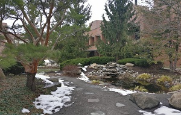
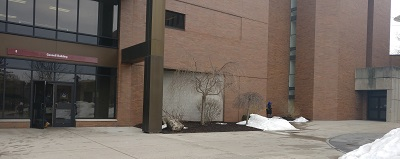

Getting Around Outdoors
The primary path that connects most buildings on campus is the Quarter Mile. Ironically, the Quarter Mile is not literally a quarter mile, but actually around a third of a mile. While the campus may be initially confusing, it is actually very easy to navigate once the building layout is learned.
A few things that are interesting and may not be as well known:
The Koi Pond

Outside of the Eastman building, going towards Gannett and the Bausch and Lomb Center is a small pond. This pond is a Japanese-style Koi pond. Here you'll find a bench, making it a nice place to sit and relax for a little while. Unfortunately, being outdoors, its difficult to appriciate for the majority of the year in snowy Rochester, so be sure to enjoy for the brief times at the beginning and ends of the year.
Hidden Doors

A few hidden entrances to buildings that are really convenient, but not commonly used. One is to the SAU, below the ramp. Really convenient if coming from The Wallace Library or Gleason Circle, this door leads to the basement of the SAU, making it a convenient entrance to club spaces or the RITZ. The other is to the right of the main door to Gosnell on Gleason Circle side. The door leads directly into the basement hallway, bypassing the atrium of the main door. It also feeds into the lower entrance for room 1250, making it an easy way to get to classes in said room or Anime Club on Thursday nights.